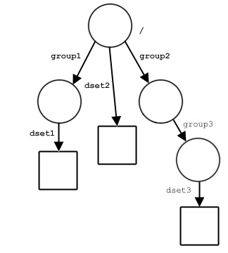

Accessing objects by location and name:
Many HDF5 function calls use a combination of a location and name
to identify an HDF5 object.
The location will be specified by a location identifier, loc_id,
and will be an HDF5 file or an object in a file,
such as a group, dataset or named datatype.
The name, name, will be a character string and
will specify an object in an HDF5 file,
such as a group, dataset or named datatype.
name will specify that object by
either an absolute path in the file specified by loc_id
or by a relative path relative to loc_id.
|  |
Sample file structure:DATA_FILE1
|
The loc_id and name combination,
as used in these function calls, can interact in any of several ways.
To illustrate, the following combinations all identify dset3
in the illustrated file structure.
loc_id is a file identifier,
name must specify the object from the file’s
root group, i.e., by an absolute path.
loc_id specifies the file DATA_FILE1.
name = '/group2/group3/dset3'
loc_id is a group identifier
and the object of interest is a member of that group,
name will simply be the name of the object.
loc_id specifies group3.
name = 'dset3'
loc_id is a group identifier
but the object of interest is not a direct member of that group,
name would generally specify the object by a relative
pathe, relative to that group.
loc_id specifies group2.
name = 'group3/dset3'
Alternatively, name could specify the object
with an absolute path in the file containing loc_id.
loc_id specifies group2.
name = '/group2/group3/dset3'
loc_id is the identifier of the object itself,
name should be a dot ( . ).
For those familiar with a UNIX shell, this works in much the
same manner as a dot ( . )
specifying the current working directory.
loc_id specifies dset3, the dataset itself.
name = '.'
H5Acreate2,
use a location identifier, object name, and attribute name,
loc_id, obj_name, and attr_name,
respectively.
loc_id and obj_name specify the object to which
an attribute is attached and carry exactly the same meaning and
interaction modes as described above for
loc_id and name.
attr_name specifies the attribute as it is attached to
that object.
The following example specifies an attribute named A3
attached to the dataset dset3 above.
loc_id specifies group3.
name = 'dset3'
attr_name = 'A3'
H5Acreate,
generally use only a location identifier and a name.
In these functions, loc_id fully specifies
the object to which an attribute is attached; the attribute itself
is specified by an attribute name, attr_name.
Again, the following example specifies an attribute named A3
attached to the dataset dset3 above.
loc_id specifies dset3.
attr_name = 'A3'